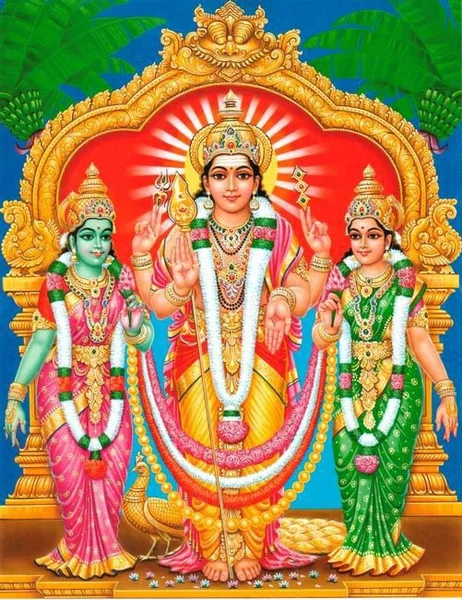

The Kanda Sasti Kavacam is a powerful hymn composed by Śrī Deva Raya Swamigal. It is a "Kavacam" (Armor) meant to protect the devotee from all directions, internal and external. Dedicated to Lord Murugan (Skanda/Canda Bhairava).
Below is the complete hymn with English transliteration and a verse-by-verse meaning, formatted for easy reading on both desktop and mobile devices.
Sing Along with This Powerful Rendition

The Complete Kanda Sasti Kavacam
Thuthipporku Valvinaipom Thunbampom
Nenjil Pathipporku Selvam Palithuk Kathithongum
Nishtaiyum Kaikoodum
Nimalar Arul Kanthar Sashti Kavacham Thanai
Amarar Idar Theera Amaram Purintha
Kumaranadi Nenjeh Kuri
Sashtiyai Nokka Saravana Bavanaar
Sishtarukku Uthavum Sengkathir Velon
Paatham Irandil Panmani Sathangai
Geetham Paada Kinkini Yaada
Maiya Nadam Seiyum Mayil Vahananaar
Kaiyil Velaal Yenaik Kaakka Vendru Vanthu
Varavara Velah Yuthanaar Varuha
Varuha Varuha Mayilon Varuha
Inthiran Mudhalaa Yendisai Potra
Manthira Vadivel Varuha Varuha
Vaasavan Maruhaa Varuha Varuha
Nesak Kuramahal Ninaivon Varuha
Aarumuham Padaitha Aiyaa Varuha
Neeridum Velavan Nitham Varuha
Sirahiri Velavan Seekkiram Varuha
Invocation and Benefits: For those who chant this, heavy karma and sorrow will vanish. For those who hold this in their heart, wealth and courage will flourish. Meditation and wisdom will be attained. This is the Armor of Lord Skanda, bestowed by the Graceful One.
Visualization of the Lord: Focus your heart on the feet of the Lord who fought to end the suffering of the Angels (Devas). Oh Lord Saravanabava, look upon us during this Sashti day. Oh Wielder of the Red Spear who helps the righteous. With anklets ringing on Your holy feet and bells chiming. You arrive riding the peacock that dances to the music.
Calling the Lord for Protection: Come with the Spear (Vel) in your hand to protect me. Come, come, Oh Lord of the Spear. Come, come, Oh Rider of the Peacock. Praised by Indra and the guardians of the eight directions. Come, come, Oh Lord with the mystic, powerful Vel. Come, nephew of Vishnu, come. Come, you who is loved by the daughter of the hunter clan (Valli). Come, Oh Lord with six faces. Come daily, Oh Lord who wears the holy ash. Come quickly, Oh Lord of the Silagiri hill.
Saravana Bavanaar Saduthiyil Varuha
Rahana Bavasa Ra Ra Ra Ra Ra Ra Ra
Rihana Bavasa Ri Ri Ri Ri Ri Ri Ri
Vinabava Sarahana Veeraa Namo Nama
Nibava Sarahana Nira Nira Nirena
Vasara Hanabava Varuha Varuha
Asurar Kudi Kedutha Aiyaa Varuha
Yennai Yaalum Ilaiyon Kaiyil
Pannirendu Aayutham Paasaan Gusamum
Parantha Vizhihal Pannirandu Ilanga
Virainthu Yenaik Kaakka Velon Varuha
Aiyum Kiliyum Adaivudan Sauvum
Uyyoli Sauvum Uyiraiyum Kiliyum
Kiliyum Sauvum Kilaroli Yaiyum
Nilai Petrenmun Nithamum Olirum
The Mystic Mantras: Oh Lord Saravanabava, come instantly. (Chanting of the mystic seed syllables 'Ra', 'Ri', 'Du' invoking the Lord's vibration). Salutations to the brave warrior, Saravanabava.
The Armor (Protecting the Body): Come, destroyer of the demons (Asuras). In the hands of the young Lord who rules me, shine the twelve weapons and the goad. Shine the twelve wide, graceful eyes. Come quickly to save me, Oh Lord of the Vel. (Chanting of mystic syllables 'Sau', 'Kili' for life protection). Let me be established in Your light forever.
Shanmuhan Neeyum Thaniyoli Yovvum
Kundaliyaam Siva Guhan Thinam Varuha
Aaru Muhamum Animudi Aarum
Neeridu Netriyum Neenda Puruvamum
Panniru Kannum Pavalach Chevvaayum
Nanneri Netriyil Navamanich Chuttiyum
Eeraaru Seviyil Ilahu Kundalamum
Aariru Thinpuyathu Azhahiya Maarbil
Palboo Shanamum Pathakkamum Tharithu
Nanmanipoonda Navarathna Maalaiyum
Muppuri Noolum Muthani Maarbum
Sepppazhahudaiya Thiruvayir Unthiyum
Thuvanda Marungil Sudaroli Pattum
Navarathnam Pathitha Nartchee Raavum
Iruthodai Azhahum Inai Muzhanthaalum
Oh Six-Faced Lord, come daily as the Kundalini energy. With your six faces and six crowns. With holy ash on your forehead and long eyebrows. With twelve eyes and coral-red lips. With gem-studded ornaments on your forehead. With earrings dangling from your twelve ears. With garlands and medals on your twelve strong shoulders. Wearing a chain of nine precious gems. With the sacred thread and pearl necklaces on your chest. With a beautiful stomach and navel. With a silk belt shining on your waist. With beautiful thighs and knees.
Thiruvadi Yathanil Silamboli Muzhanga
Seha Gana Seha Gana Seha Gana Segana
Moga Moga Moga Moga Moga Moga Mogana
Naha Naha Naha Naha Naha Naha Nahena
Digu Kuna Digu Digu Digu Kuna Diguna
Ra Ra Ra Ra Ra Ra Ra Ra Ra Ra Ra Ra Ra Ra Ra
Ri Ri Ri Ri Ri Ri Ri Ri Ri Ri Ri Ri Ri Ri Ri
Du Du Du Du Du Du Du Du Du Du Du Du Du Du Du
Dagu Dagu Digu Digu Dangu Dingugu
Vinthu Vinthu Mayilon Vinthu
With anklets sounding on your holy feet. (Chanting of rhythmic dance syllables describing the peacock's dance and invoking divine protection through sacred sound vibrations).
Munthu Munthu Muruhavel Munthu
Yenthanai Yaalum Yehraha Selva
Mainthan Vehndum Varamahizhnth Thuthavum
Laalaa Laalaa Laalaa Vehshamum
Leelaa Leelaa Leelaa Vinothanendru
Unthiru Vadiyai Uruthi Yendrennum
Yen Thalai Vaithun Yinaiyadi Kaaka
Yennuyirk Uyiraam Iraivan Kaaka
Panniru Vizhiyaal Baalanaik Kaaka
Adiyen Vathanam Azhahuvel Kaaka
Direct Plea for Protection: Rush, rush to the front, Oh Lord Muruga. Oh Lord of the hills who rules me. Grant your son the boons I desire with happiness. You who enjoys the playful divine forms. I hold your holy feet as my only certainty. Place your feet on my head to bless me. Protect the life within my life, Oh Lord. Protect this child with your twelve eyes. Let the Beautiful Vel protect my face.
Podipunai Netriyaip Punithavel Kaaka
Kathirvel Irandu Kanninaik Kaaka
Vithisevi Irandum Velavar Kaaka
Naasihal Irandum Nalvel Kaaka
Pesiya Vaaythanai Peruvel Kaaka
Muppathirupal Munaivel Kaaka
Seppiya Naavai Sevvel Kaaka
Kannam Irandum Kathirvel Kaaka
Yennilang Kazhuthai Iniyavel Kaaka
Maarbai Irathna Vadivel Kaaka
Anatomy Protection (Head to Toe): Let the Holy Vel protect my ash-smeared forehead. Let the Ray-like Vel protect my two eyes. Let the Lord of the Vel protect my ears. Let the Good Vel protect my nostrils. Let the Great Vel protect my mouth. Let the Sharp Vel protect my thirty-two teeth. Let the Red Vel protect my tongue. Let the Ray-like Vel protect my cheeks. Let the Sweet Vel protect my neck. Let the Gem-studded Vel protect my chest.
Serila Mulaimaar Thiruvel Kaaka
Vadivel Iruthol Valamberak Kaaka
Pidarihal Irandum Peruvel Kaaka
Azhahudan Muthuhai Arulvel Kaaka
Pazhu Pathinaarum Paruvel Kaaka
Vetrivel Vayitrai Vilangave Kaaka
Sitridai Azhahura Sevvel Kaaka
Naanaam Kayitrai Nalvel Kaaka
Aan Penn Kurihalai Ayilvel Kaaka
Pittam Irandum Peruvel Kaaka
Let the Holy Vel protect my chest area. Let the Strength-giving Vel protect my shoulders. Let the Great Vel protect my neck. Let the Graceful Vel protect my back. Let the Wide Vel protect my sixteen ribs. Let the Victorious Vel protect my stomach. Let the Red Vel protect my waist. Let the Good Vel protect my umbilical cord. Let the Sharp Vel protect my reproductive organs. Let the Great Vel protect my buttocks.
Vattak Kuthathai Valvel Kaaka
Panai Thodai Irandum Paruvel Kaaka
Kanaikaal Muzhanthaal Kathirvel Kaaka
Aiviral Adiyinai Arulvel Kaaka
Kaihal Irandum Karunaivel Kaaka
Munkai Irandum Muranvel Kaaka
Pinkai Irandum Pinnaval Irukka
Naavil Sarasvathi Natrunai Yaaha
Naabik Kamalam Nalvel Kakka
Muppaal Naadiyai Munaivel Kaaka
Let the Strong Vel protect my rectum. Let the Wide Vel protect my thighs. Let the Ray-like Vel protect my knees and calves. Let the Graceful Vel protect my toes. Let the Compassionate Vel protect my hands. Let the Strong Vel protect my forearms. Let the Goddess Saraswati stay on my tongue. Let the Good Vel protect my navel. Let the Sharp Vel protect the three distinct pulse channels.
Yeppozhuthum Yenai Yethirvel Kaaka
Adiyen Vasanam Asaivula Neram
Kaduhave Vanthu Kanahavel Kaaka
Varum Pahal Thannil Vachravel Kaaka
Arai Irul Thannil Anaiyavel Kaaka
Yemathil Saamathil Yethirvel Kaaka
Thaamatham Neeki Chathurvel Kaaka
Kaaka Kaaka Kanahavel Kaaka
Noaka Noaka Nodiyil Noaka
Thaakka Thaakka Thadaiyara Thaakka
Protection in Time and Space: Let the Vel always be in front to protect me. Whenever I speak or move. Come instantly, Oh Golden Vel, to protect me. Protect me during the day, Oh Diamond Vel. Protect me in the darkness of night, Oh Fire-like Vel. Protect me against the God of Death and during all watches of the day. Remove delays and protect me, Oh Clever Vel. Protect, protect, Oh Golden Vel. Look, look, and protect me in a second. Attack, attack, and remove my obstacles without fail.
Paarka Paarka Paavam Podipada
Billi Soonyam Perumpahai Ahala
Valla Bootham Valaashtihap Peihal
Allal Paduthum Adangaa Muniyum
Pillaihal Thinnum Puzhakadai Muniyum
Kollivaayp Peihalum Kuralaip Peihalum
Penkalai Thodarum Bramaraa Chatharum
Adiyanaik Kandaal Alari Kalangida
Irisi Kaatteri Ithunba Senaiyum
Yellilum Iruttilum Yethirpadum Mannarum
Destruction of Evil and Black Magic: As you look at them, let my sins turn to dust. Let witchcraft and great enemies vanish. Let powerful demons and spirits of the sky flee. Let the trouble-causing spirits and graveyard ghouls scatter. Let fire-breathing ghosts and deceiving spirits run away. Let all evil spells, mantras, and black magic buried in the house fade away. Let them all disappear upon seeing me (your devotee). Let enemies tremble and retreat when they see me. Let deceivers come and bow down to me. Let the messengers of Death be terrified if they see me.
Kana Pusai Kollum Kaaliyodu Anaivarum
Vittaan Gaararum Migu Pala Peihalum
Thandiyak Kaararum Sandaalar Halum
Yen Peyar Sollavum Idi Vizhunthodida
Aanai Adiyinil Arum Paavaihalum
Poonai Mayirum Pillaihal Enpum
Nahamum Mayirum Neenmudi Mandaiyum
Paavaihal Udane Pala Kalasathudan
Manaiyil Puthaitha Vanjanai Thanaiyum
Ottiya Paavaiyum Ottiya Serukkum
All evil spells and black magic cease. Witchcraft and deceiving spirits vanish instantly. All forms of negative forces, including those who curse and those who wish harm, scatter in fear. Even the most powerful dark entities flee at the sight of the devotee. All negative rituals performed against the devotee are rendered powerless. Cats, dogs, insects, birds, snakes, and all creatures that were enchanted to cause harm are released from their curses.
Kaasum Panamum Kaavudan Sorum
Othu Manjanamum Oruvazhi Pokum
Adiyanaik Kandaal Alainthu Kulainthida
Maatran Vanjahar Vanthu Vanangida
Kaala Thoothaal Yenai Kandaal Kalangida
Anji Nadungida Arandu Purandida
Vaay Vittalari Mathi Kettoda
Padiyinil Mutta Paasak Kayitraal
Kattudan Angam Katharida Kattu
Katti Uruttu Kaal Kai Muriya
All offerings, money, and materials meant for evil purposes fade away. All black magic remedies become ineffective. Upon seeing the protected devotee, enemies tremble and lose courage. Deceivers and manipulators bow down in submission. Even the messengers of Death become afraid. Let them shake in fear and run away screaming. Tie them up with the rope of love. Smash the obstacles, roll them away. Let the enemies be stunned and confused.
Kattu Kattu Katharida Kattu
Muttu Muttu Muzhihal Pithungida
Sekku Sekku Sethil Sethilaaha
Sokku Sokku Soorpahai Sokku
Kuthu Kuthu Koorvadi Velaal
Bind them, break them, destroy them. Pierce through all obstacles with power. Burn away all hesitation and delay. Destroy all suffering and pain. Pierce them with your sharp Vel.
Patru Patru Pahalavan Thanaleri
Thanaleri Thanaleri Thanalathuvaaha
Viduvidu Velai Verundathu Oda
Puliyum Nariyum Punnari Naayum
Yeliyum Karadiyum Inithodarnthu Oda
Protection from Wild Animals: Let the Vel burn like the sun's fire and chase them. Let the Vel fly and scare them away. Let tigers, foxes, wolves, rats, and bears run away in fear. Let all wild creatures flee in terror.
Thelum Paambum Seyyaan Pooraan
Kadivida Vishangal
Kadithuyar Angam
Yeriya Vishangal Yelithudan Iranga
Polippum Sulukkum Oruthalai Noyum
Vaatham Sayithiyam Valippu Pitham
Protection from Poison and Disease: Let scorpions, snakes, and centipedes flee. Let their severe poisons come down and leave the body immediately. Let swelling, joint pain, headaches, paralysis, and bile disorders disappear. Let ulcers, colic, skin diseases, and bile problems vanish.
Soolai Sayam Kunmam Sokku Sirangu
Kudaichal Silanthi Kudalvip Purithi
Pakka Pilavai Padarthodai Vaazhai
Kaduvan Paduvan Kaithaal Silanthi
Parkuthu Aranai Paru Arai Yaakkum
Yellap Piniyum Yendranaik Kandaal
Nillaa Thoda Nee Yenak Arulvaay
Let arthritis, respiratory diseases, bloating, and headaches cease. Let constipation be relieved and the abdomen be purified. Let all forms of bodily pain and discomfort fade. Let all diseases vanish the moment they see me. Grant me the grace that they do not stay.
Eerezhula Hamum Yenak Uravaaha
Aanum Pennum Anaivarum Yenakkaa
Mannaal Arasarum Mahizhnthura Vaahavum
Unnai Thuthikka Un Thirunaamam
Saravana Bavane Sailoli Bavanee
Thirupura Bavane Thigazholi Bavane
Paripura Bavane Pavamozhi Bavane
Arithiru Maruhaa Amaraa Pathiyai
Social Harmony and Relationships: Let the fourteen worlds be my kin. Let men and women be favorable to me. Let the kings and rulers be pleased with me.
Phala Sruti (Conclusion and Benefits): I praise your holy name, Oh Saravanabava. You who released the Devas from their hard imprisonment. Oh Kanda, Oh Guha, Oh Lord of the Ray-like Vel. You who destroyed the demon Idumban, Oh Sweet Vel Muruga.
Kaathu Thevarkal Kadum Sirai Viduthaay
Kanthaa Guhane Kathir Velavane
Kaarthihai Mainthaa Kadambaa Kadambanai
Idumbanai Yazhitha Iniyavel Muruhaa
Thanihaa Salane Sangaran Puthalvaa
Kathirkaa Mathurai Kathirvel Muruhaa
Pazhani Pathivaazh Baala Kumaaraa
Aavinan Kudivaazh Azhahiya Vela
Senthil Maamalai Yurum Sengalva Raayaa
Samaraa Purivaazh Shanmuha Tharase
You who released the celestial beings from their difficult circumstances. Oh Kanda, Oh Guha, Oh Lord of the Vel. You who destroyed the demon Idumban, Oh Sweet Vel Muruga. Oh Lord of Kathirkamam and Palani. Oh Lord of Thiruchendur and Chengalpet. Oh King of the Six Faces who lives in battle.
Kaarar Kuzhalaal Kalaimahal Nandraay
Yennaa Irukka Yaan Unai Paada
Yenai Thodarnthu Irukkum Yenthai Muruhanai
Padinen Aadinen Paravasa Maaha
Aadinen Naadinen Aavinan Poothiyey
Nesamudan Yaan Netriyil Aniya
Paasa Vinaihal Patrathu Neengi
Unpatham Perave Unnarulaaha
Anbudan Rakshi Annamum Sonnamum
Metha Methaaha Velaayu Thanaar
While the Goddess of Knowledge dwells on my tongue, I sing of you. I sang and danced in ecstasy, seeking the Lord who protects me. I sought the sacred ash of the Lord. Wearing the ash with love, my karmic attachments are removed. To attain your feet, grant me your grace. Protect me with love and grant me food and wealth. Grant me great prosperity, Oh Lord of the Vel.
Sithi Petradiyen Sirappudan Vazhga
Vaazhga Vaazhga Mayilon Vaazhga
Vaazhga Vaazhga Vadivel Vaazhga
Vaazhga Vaazhga Malai Guru Vaazhga
Vaazhga Vaazhga Malai Kura Mahaludan
Vaazhga Vaazhga Vaarana Thuvasam
Vaazhga Vaazhga Yen Varumaihal Neenga
Yethanai Kuraihal Yethanai Pizhaihal
Yethanai Adiyen Ye thanai Seiyinum
Petravan Neeguru Poruppathu Unkadan
Let your devotee attain success and live with honor. Long live the Peacock, Long live the Vel. Long live the devotee, Long live the Guru. It is your duty as a Guru/Father to forgive my mistakes. Like a mother forgives, and a father loves his son. Accept me and grant that your devotees flourish. Those who meditate on this Kanda Sasti Kavacam without doubt will have the eight directions under their sway. The rulers of the directions will grant them favors.
Petraval Kuramahal Petravalaame
Pillai Yendranbaay Piriya Malithu
Mainthan Yenmeethu Unmanam Mahizhntharuli
Thanjam Yendradiyaar Thazhaithida Arulsey
Kanthar Sashti Kavasam Virumbiya
Baalan Theva Raayan Paharn Thathai
Kaalaiyil Maalaiyil Karuthudan Naalum
Aasaa Rathudan Angam Thulakki
Nesamudan Oru Ninaivathu Vaahi
Kanthar Sashti Kavasam Ithanai
Like a mother forgets her child's mistakes and a father loves his son unconditionally. Accept me and grant that your devotees flourish. Those who meditate on this Kanda Sasti Kavacam without doubt will receive the eight directions' blessing. The rulers of the directions will grant them all favors. This is the power of the Kanda Sasti Kavacam. Oh Lord Murugan, this armor of protection. Morning and evening, I meditate upon you with devotion. With love and faith in my heart, I remember only this truth about you. The power of the Kanda Sasti Kavacam remains eternal.
Sindhai Kalangaathu Thiyaani Pavarhal
Orunaal Muppathaa Ruru Kondu
Othiyeh Jebithu Uhanthu Neeraniya
Ashta Thikkullor Adangalum Vasamaay
Thisai Mannar Yenmar Seyalathu (Sernthangu) Arulvar
Maatrala Rellaam Vanthu Vananguvar
Navakol Mahizhnthu Nanmai Alithidum
Navamatha Nenavum Nallezhil Peruvar
Enthanaalum Eerettaay Vaazhvar
Kantharkai Velaam Kavasa Thadiyai
Those whose minds are agitated and restless will find peace. Even if one has committed wrongs for many years, they will be relieved of their burden. They will be released from the chains of negative karma. The eight directions and all worlds will protect them. The rulers and powers of all directions will grant them blessings. Enemies will come and bow down. The nine planets will give only goodness. They will live happily for sixteen lifespans. This Armor of the Vel grants eternal peace. By Lord Murugan's divine spear and this sacred armor of protection.
Vazhiyaay Kaana Meiyaay Vilangum
Vizhiyaal Kaana Verundidum Peigal
Pollathavarai Podi Podi Yaakkum
Nallor Ninaivil Nadanam Puriyum
Sarva Sathuru Sankaa Rathadi
Arintha Yenathullaam Ashta Letchmihalil
Veera Letchmikku Virun Thunavaaha
Soora Bathmaavaith Thunithagai Yathanaal
Iruba Thezhvarkku Uvan Thamuthalitha
Gurubaran Pazhani Kundrinil Irukkum
The way is made clear and the devotee shines brightly. Ghosts will flee just by seeing the devotee. Evil people will be turned to dust. The Lord will dance in the minds of the good. This is the weapon that destroys all enemies. Understanding this, I praise the feet of the Lord at Palani. I praise the beautiful Lord who stops and rules me. Praise to the Commander of the Deva's army. Praise to the Lord who delighted Valli. The Lord of Palani resides on the sacred mountain.
Chinna Kuzhanthai Sevadi Potri
Yenai Thadu Thaatkola Yendrana Thullum
Meviya Vadivurum Velava Potri
Thevargal Senaa Pathiye Potri
Kuramahal Manamahizh Kove Potri
Thiramihu Thivya Thehaa Potri
Idumbaa Yuthane Idumbaa Potri
Kadambaa Potri Kanthaa Potri
Vetchi Punaiyum Veleh Potri
Uyargiri Kanaha Sabaikor Arase
Praise to the Divine Child. Praise to the one who protects me with his might. Praise to the beautiful Lord of the Vel. Praise to the Commander of the Deva's army. Praise to the Lord who delighted Valli. Praise to the Divine Body. Praise to the Great Hero. Praise to Kanda, Praise to the Vel. Praise to the King of the Golden Hall on the High Hill.
Mayilnada Miduvoy Malaradi Saranam
Saranam Saranam Saravanabava Om
Saranam Saranam Shanmuhaa Saranam
Saranam Saranam Shanmuhaa Saranam
I surrender to the flower feet of the One whose peacock dances. I surrender, I surrender, Oh Saravanabava Om. I surrender, I surrender, Oh Six-Faced Lord. I surrender, I surrender, Oh Six-Faced Lord.
Jai Khyapa Parampara. May Lord Murugan protect all seekers on the path of Dharma.
Benefits of Chanting Kanda Sasti Kavacam
- Protection from All Directions: The kavacam acts as a spiritual armor, protecting the devotee from physical, mental, and spiritual harm.
- Removal of Obstacles: Chanting this hymn destroys negative energies, black magic, and obstacles in one's path.
- Health and Prosperity: It brings health, wealth, and good fortune to the devoted reciter.
- Victory Over Enemies: The kavacam grants courage and strength to overcome adversaries and inner demons.
- Spiritual Growth: Regular recitation deepens one's spiritual practice and devotion to Lord Murugan.
- Fulfillment of Desires: Those who recite with sincere faith receive the blessings of the deity and fulfillment of their righteous desires.
How to Recite Kanda Sasti Kavacam
Best Time: Any time of day or night. Use the Youtube Video to sing along or just read along. Slowly you will get the rhythm and meaning.
Frequency: As you wish. Your bhava (devotion) is what matters most.
Place: Anywhere.There is no place on this loka where this cannot be recited.
Attitude: Total surrender to Lord Murugan. As long as your are aligned to Dharma he answers your call. Ask forgiveness like a child, don't dwell on mistakes.
Jai Canda Bhairava. Jai Khyapa Parampara.